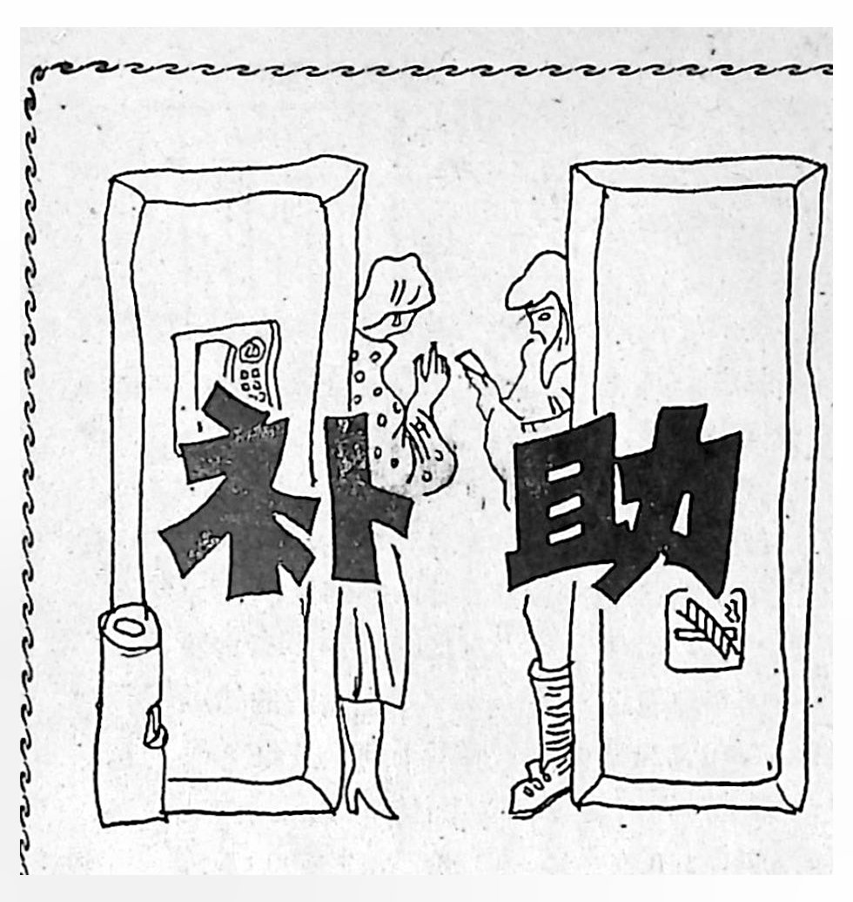

佚名 《人事》1988年第11期（总第38期），第39页
补助（题图）
Allowances (title drawing)
- Text in the drawing
- 补助
Allowance (the title, one character on each door) - Passage illustrated
“下乡补助，很好发。外甥打灯笼——照旧（舅），书记、乡长25天、副书记、副乡长22天，其他人员20天，这已经成了不成规矩的规矩”。
“The countryside allowance is easy to pay. Like a nephew carrying a lantern — same as before [照旧, punning on 照舅, ‘lighting the uncle’]: Party secretary and township head 25 days, deputy secretary and deputy head 22 days, everyone else 20 days. It's become a rule that isn't a rule.”From the story 补助 (“Allowances”) by Wang Wenjun, on the same page. 王文君《补助》，同页
- Description
- Title drawing for the story: two doorways each bear one huge character of the word “allowance”; a woman steps out of one and a bearded man out of the other, reaching toward each other across the gap.
- Note
- In the story the new bookkeeper of a township finds the register of days spent in the villages entirely blank. The deputy township head explains that the allowance for “going down to the countryside” is paid by rank — 25 days for the Party secretary and township head, 22 for their deputies, 20 for everyone else — whether or not anyone went.
- Artist
- Unattributed 佚名
- Published in
- 《人事》1988年第11期（总第38期）, p. 39
- Themes
- Privilege · Formalism · Paperwork and documents · Story illustrations

Cite
Unattributed, “补助（题图）” [Allowances (title drawing)], Renshi (Personnel) 《人事》, 1988, no. 11, p. 39.